授权实景图
授权实景图
莲花山公园
莲花山公园位于莲花街道，南侧草坪、莲花湖和约百米主峰把休闲、亲子活动与福田天际线放进一条可伸缩的城市游线。现场不必追求一…
DISTRICT GUIDE · 36 PLACES
行政中心、城市公园与改革开放叙事最密集的一站。
SMALL PICKS
水围雅石艺术博物馆、深圳图画书博物馆和福田河碧道，比中心区地标更适合慢慢看。
ALL PLACES
授权实景图
莲花山公园位于莲花街道，南侧草坪、莲花湖和约百米主峰把休闲、亲子活动与福田天际线放进一条可伸缩的城市游线。现场不必追求一…
 授权实景图
授权实景图
香蜜公园位于香蜜湖片区，前身的农业科研记忆被保留在花园、果树、栈桥与公共建筑之间，婚姻登记处和图书空间让它不同于普通草坪…
 授权实景图
授权实景图
深圳国际园林花卉博览园位于竹子林，园博会遗留的各地园林、塔院和植物群落密集分布，重点在比较不同造园语言，而不是赶完所有展…
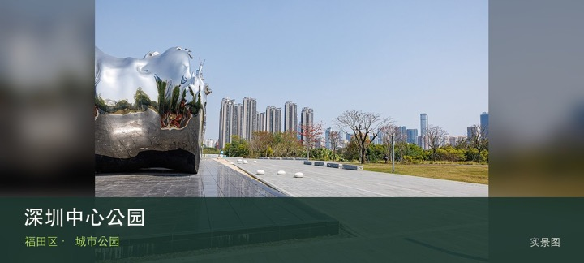
授权实景图深圳中心公园位于华富街道，由旧有城市绿化隔离带转化而来，狭长绿地把华强北、福田河与中心区社区连接成可分段进入的日常公园。…
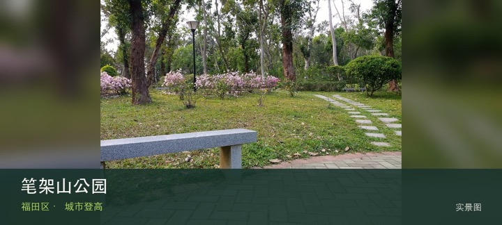
授权实景图笔架山公园位于华强北北侧，低海拔双峰、山脚草地与城市绿廊靠得很近，用较短爬升就能获得中心区楼群和公园水体的层次变化。现场…
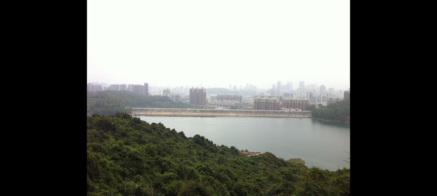
编辑配图·非现场实景梅林山公园位于梅林片区，彩梅入口与侨香入口对应不同社区界面，林下台阶和城市边缘山脊适合做两小时以内的往返而非盲目穿越。现…
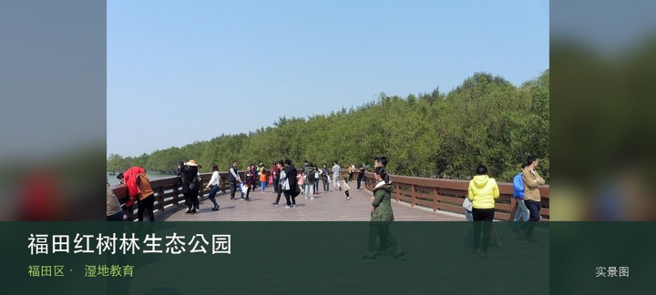
授权实景图福田红树林生态公园位于下沙深圳河口，红树林、潮滩与深圳河口共同构成城市中的滨海生态课堂，观鸟价值来自迁徙季的安静观察而不…
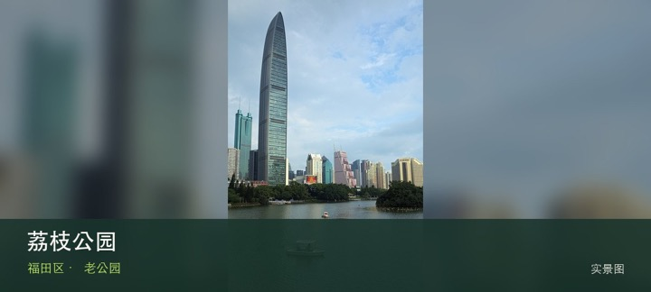
授权实景图荔枝公园位于红岭老城区，荔枝林、湖面与老城区公共生活贴得很近，邓小平画像广场周边的城市记忆使它比普通社区公园更具时代切片…
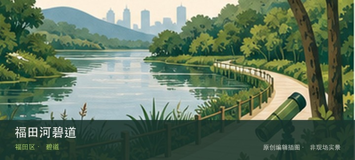
编辑配图·非现场实景福田河碧道位于笔架山至深圳河沿线，这条碧道把笔架山、中心公园与南部河口方向串成连续慢行轴，河道修复、桥下空间和城市密度会…
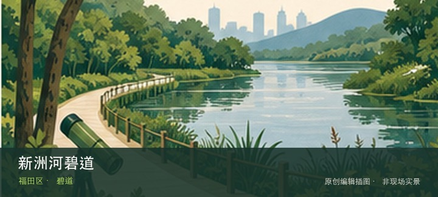
编辑配图·非现场实景新洲河碧道位于新洲社区，社区河道经过生态修复后形成亲水步道、桥下空间与连续绿带，观察重点是水岸如何嵌入高密度居住区。现场…
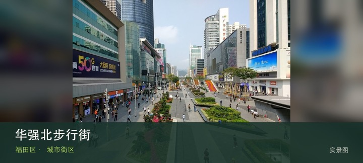
授权实景图华强北步行街位于华强北，电子市场、商业楼宇与夜间街道共同展示深圳硬件产业的高密度流通网络，价值在观察业态而非只逛一座商场…
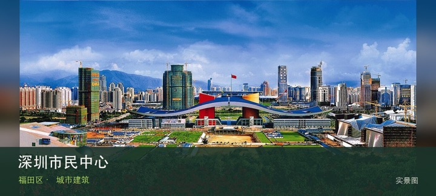
授权实景图深圳市民中心位于福中中心区，弧形屋顶、中央轴线和两侧公共文化建筑组成深圳行政中心的代表性城市空间，广场与莲花山形成清晰对…
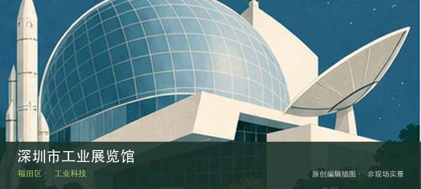
编辑配图·非现场实景深圳市工业展览馆位于市民中心，展陈以深圳制造业、战略性新兴产业与工业设计演进为主，适合把城市天际线背后的产业系统补进同一…
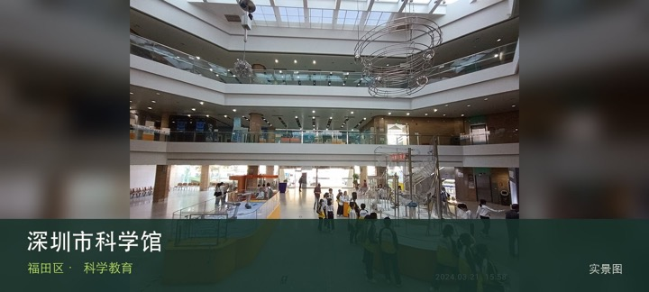
授权实景图深圳市科学馆位于上步中路，老牌科普场馆承载几代市民的科学教育记忆，展项规模和更新节奏不同于光明新馆，更适合结合当天活动选…
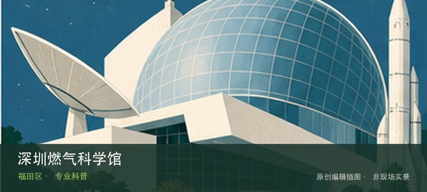
编辑配图·非现场实景深圳燃气科学馆位于梅坳片区，围绕城市燃气来源、输配系统与用气安全展开，专业主题明确，体验依赖预约场次而不是普通景区式随到…
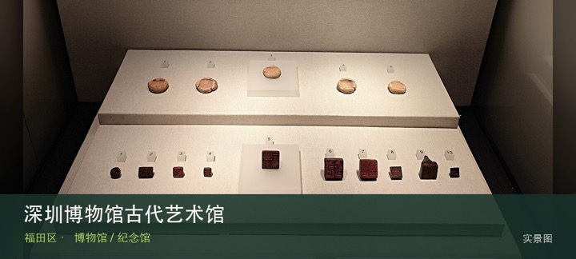
授权实景图深圳博物馆古代艺术馆位于同心路，以中国古代艺术专题、馆藏器物与不定期特展为核心，建筑和展陈气质都区别于市民中心的历史民俗…
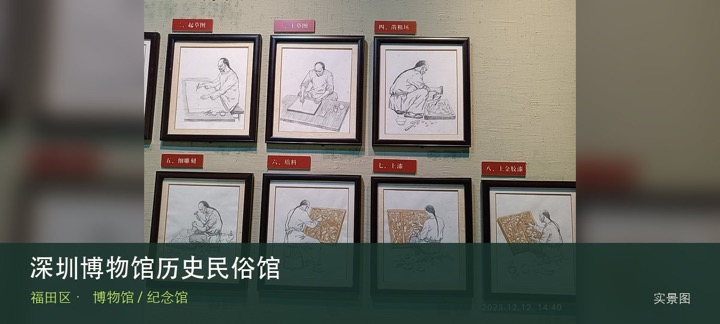
授权实景图深圳博物馆历史民俗馆位于市民中心 A 区，以深圳地区历史、近现代城市发展和民俗生活为主线，是理解这座移民城市从地域社会走…
深圳市改革开放展览馆位于市民中心当代艺术与城市规划馆内，大型展陈以改革开放关键节点、城市建设档案与实物复原讲述深圳速度，…
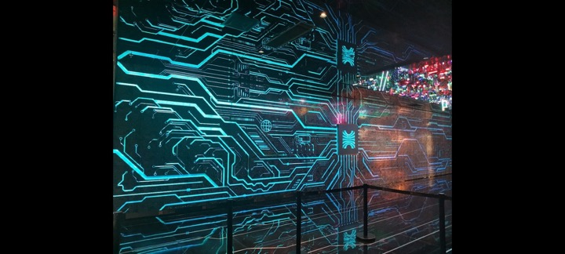
编辑配图·非现场实景深圳市福田区华强北博物馆位于广博现代之窗大厦，场馆把旧工业区转型、电子市场兴起和创业者群体放进华强北街区史中，是理解楼下…
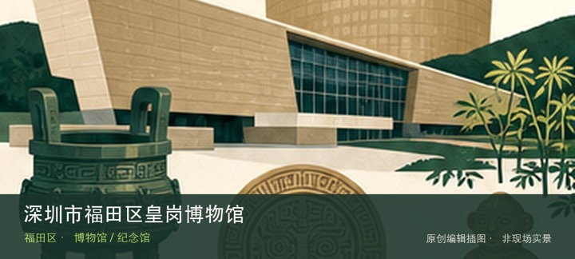
编辑配图·非现场实景深圳市福田区皇岗博物馆位于皇岗村，场馆主题连接皇岗村史、口岸边境与城中村变迁，即使闭馆改造期间也值得作为理解福田本地社区…
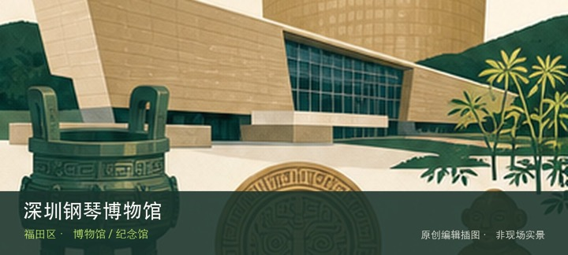
编辑配图·非现场实景深圳钢琴博物馆位于上步南路，以钢琴器物、制造结构和音乐文化为专题，价值在从乐器形制理解声音生产，而不是把馆名误当作固定演…
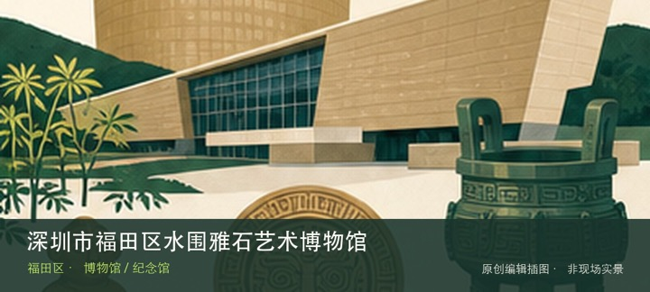
编辑配图·非现场实景深圳市福田区水围雅石艺术博物馆位于水围村，以观赏石的天然形态、石种与文人赏石传统为线索，所在城中村环境也提供民办专题馆与…
深圳市棋国象棋博物馆位于香蜜湖，专题围绕象棋器物、棋谱和竞技文化展开，能够从一项传统智力运动观察规则、传播与收藏，但目前…
深圳市大观茶具博物馆位于福保片区，以茶具材质、器形和饮茶礼俗为专题，适合把陶瓷、金属与地域生活方式放在同一套器物系统中比…
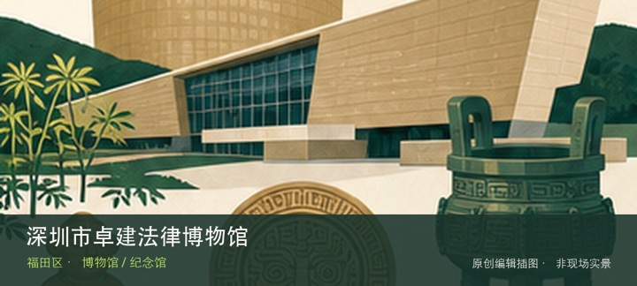
编辑配图·非现场实景深圳市卓建法律博物馆位于福中三路，以法律文献、司法器物与法治实践为专题，场馆位于专业机构环境，重点是理解制度如何通过文本…
深圳图画书博物馆位于景田妇儿大厦，围绕图画书原画、出版过程与儿童阅读展开，重点不只在读一本书，而在看文字、图像和装帧如何…
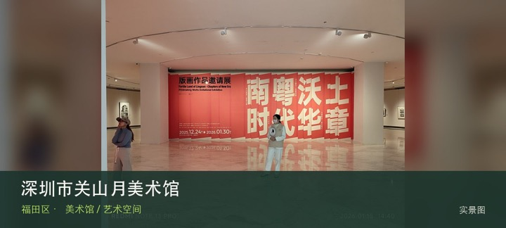
授权实景图深圳市关山月美术馆位于莲花山南侧，以关山月艺术研究、近现代中国美术与当代专题展为核心，位置适合与莲花山形成自然和艺术的一…
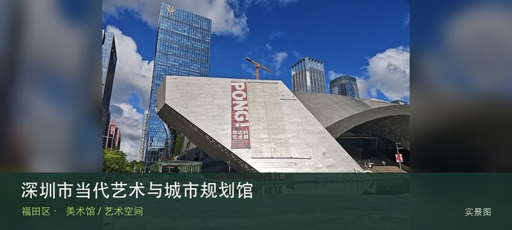
授权实景图深圳市当代艺术与城市规划馆位于市民中心，双馆建筑把当代艺术展览与城市规划叙事并置，大尺度中庭和连续展厅本身就是理解深圳公…
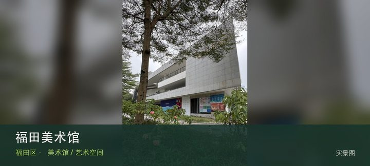
授权实景图福田美术馆位于梅林，区级美术馆更贴近本地创作、公共文化项目与阶段性主题展，适合观察福田中心区之外的社区艺术供给。这里的价…
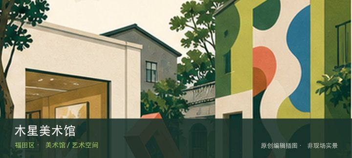
编辑配图·非现场实景木星美术馆位于福田保税区，民营当代艺术空间位于产业园区语境，展览常围绕年轻艺术、跨媒介实践与收藏项目展开，门禁比市属馆更…
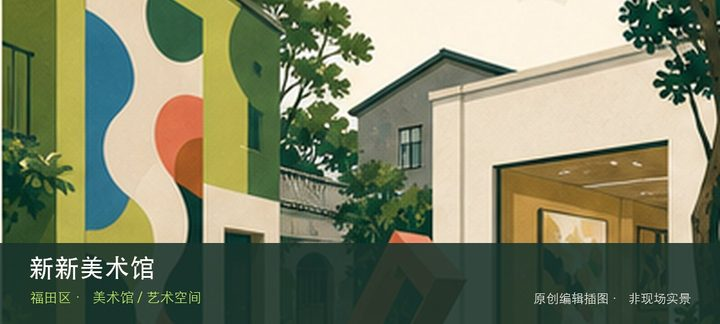
编辑配图·非现场实景新新美术馆位于彩田南路，城市楼宇中的民营美术馆以阶段性艺术展览和文化活动为主，小尺度空间更适合围绕一个主题细看而非期待大…
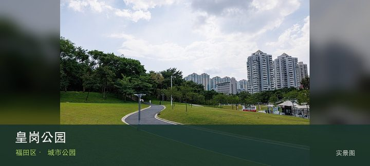
授权实景图皇岗公园位于益田路2002号，15公顷级社区城市公园，以山体、林荫和运动空间服务皇岗与益田片区。这处地点的内容并不靠规模…
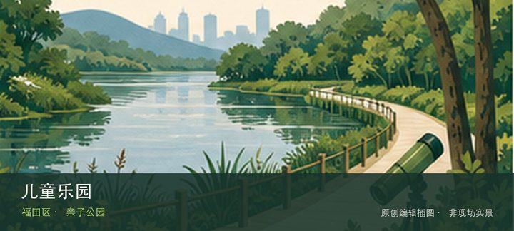
编辑配图·非现场实景儿童乐园位于香蜜湖街道农林路71号，老牌儿童主题公园把游乐设施、树荫与家庭休息空间集中在农林片区。现场的空间线索集中在分…
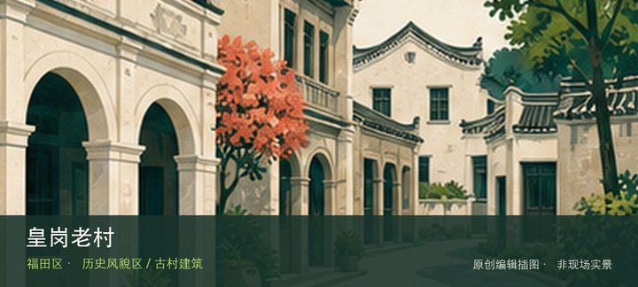
编辑配图·非现场实景皇岗老村位于福田区皇岗社区，深圳首批历史风貌区之一，适合从祠堂、旧巷和城中村更新并置关系理解中心区原生聚落。先辨认皇岗村…
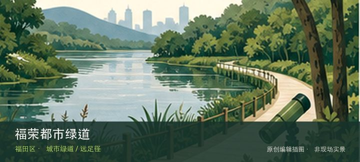
编辑配图·非现场实景福荣都市绿道位于新洲路至红树林的福荣路南侧，约3.08公里的都市健身走廊串联七个社区，开放时间通常为07:00—22:0…
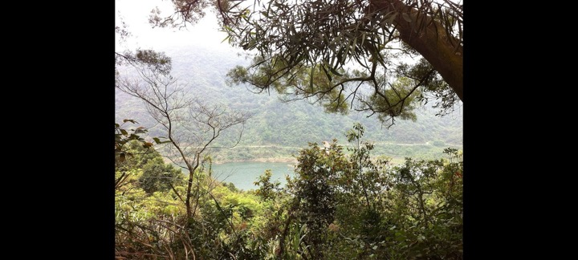
编辑配图·非现场实景梅林绿道位于梅林坳至二线关山体边界，约23公里的省立绿道二号线组成部分，城市边缘山林与旧边防道路共同构成长距离路线。把注…